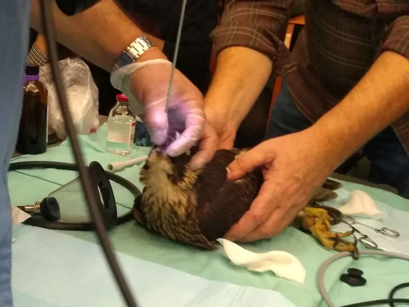

Tráviaca sústava
- Nálepy alebo iné zmeny v zobákovej dutine
- Výtok, cudzie teleso
- Zvracanie
- Znížený apetít
- Zástava trávenia
- Zmena vzhľadu trusu
Nálepy v zobáku bránia v prijímaní potravy a bývajú bolestivé – sú dôvodom na výter. Hrvoľ by mal byť vždy naplnený len toľko, aby dravec stíhal tráviť. Pri zástave trávenia v hrvoli sa rýchlo premnožia baktérie a obsah začne kvasiť až hniť. Preto dravca nekŕmime jednorazovo veľkým množstvom potravy (doplna), ani po úspešnom love.
Zelený trus po hladovaní je normálny – súvisí so zvýšeným vylučovaním žlče. Vodnatý alebo inak sfarbený trus však môže signalizovať, že zlyháva pečeň alebo pankreas.
Vzorku trusu na parazitologické vyšetrenie zbierame 3 dni a v rôznych denných hodinách, pretože niektoré parazity vylučujú vajíčka len v určitú dennú dobu. Zbiera sa iba hnedá časť bez moču, do vrecka alebo skúmavky, aby nevyschla – vyschnutá vzorka môže byť falošne negatívna. Odčervenie má predchádzať vyšetrenie trusu.
